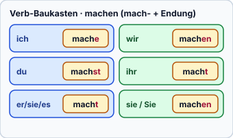

Regelmäßige Verben im Präsens
Mit einem KI-Tutor lernen
Ein KI-Tutor erklärt dir diese Seite und hilft dir bei den Aufgaben. Wähl deinen Assistenten:
Mit Claude öffnen Mit ChatGPT öffnen Mit Mistral Vibe öffnen
Du nutzt dein eigenes Konto beim Anbieter. Der Assistent ist kein Angebot von lernapps.net: lernapps liefert nur Inhalte und Aufgaben. Die Wahl gilt für alle Seiten, nur auf diesem Gerät.
Erster Schultag in Klasse 6
Am Montag geht Peter mit Lukas in die 6. Klasse in Lindenberg. Sie treffen Nadia: Ich wohne hier, ich lerne Deutsch und wir spielen zusammen Tischtennis.
Aufgabe
Lösung
du lernst richtige Antwort
Richtig: Stamm lern- plus Endung -st für du.
du lernt
-t ist die Endung für er/sie/es und ihr, nicht für du.
du lerne
-e ist die Endung für ich.
Entferne -en vom Infinitiv, um den Verbstamm zu finden (lernen → lern-). Hänge dann die Personalendung an.
Die Endungen: -e, -st, -t, -en

© CC0-1.0Der Stamm (mach-) bleibt gleich — nur die Endung wechselt je nach Person.
| Pronomen | Endung | wohnen |
|---|---|---|
| ich | -e | wohne |
| du | -st | wohnst |
| er / sie / es | -t | wohnt |
| wir | -en | wohnen |
| ihr | -t | wohnt |
| sie / Sie | -en | wohnen |
Zwei kleine Schreibhilfen
Endet der Stamm auf -t oder -d (arbeit-en, find-en), kommt ein -e- vor -st und -t: du arbeitest, er arbeitet, ihr arbeitet. Endet der Stamm auf -s, -ß, -z (heiß-en), nimmt du nur -t: du heißt.
| Deutsch | Beispiel · Hinweis | Englisch |
|---|---|---|
| wohnen | Peter wohnt jetzt in Lindenberg. Peter now lives in Lindenberg. | to live (reside) |
| lernen | Wir lernen Deutsch. We are learning German. | to learn, to study |
| arbeiten | Frau Weber arbeitet im Büro. Frau Weber works in an office. | to work |
| heißen | Wie heißt du? What is your name? | to be called |
Übung
Aufgabe
Lösung
Richtige Antwort: ich – spiele; du – spielst; er / sie / es – arbeitet; wir / sie / Sie – spielen
ich nimmt -e, du nimmt -st, er/sie/es nimmt -t (mit Extra-e nach -t: arbeitet), und wir sowie sie/Sie nutzen -en.
Aufgabe
Konjugiere die Verben in Klammern im Präsens.
- Nadia plays basketball. (spielen) → Nadia … Basketball.
- You work a lot, Herr Weber! (arbeiten) → Herr Weber, Sie … viel!
- What is your name? (heißen, du) → Wie … du?
- He works in Lindenberg. (arbeiten) → Er … in Lindenberg.
Lösung
- Nadia spielt Basketball.
- Herr Weber, Sie arbeiten viel!
- Wie heißt du?
- Er arbeitet in Lindenberg.
Mit dem Schema -e, -st, -t, -en, -t, -en (plus Extra-e nach -t/-d und -t nach -s/-ß/-z) konjugierst du fast alle regelmäßigen Verben.
Aufgabe
Übersetze die kurzen Sätze ins Deutsche.
- I live in Lindenberg.
- We learn German.
Lösung
- Ich wohne in Lindenberg.
- Wir lernen Deutsch.
Im Deutschen gibt es kein extra „am learning“ — das Präsens deckt „I learn“ und „I am learning“ ab.
Fehler gefunden oder eine Idee für diese App?